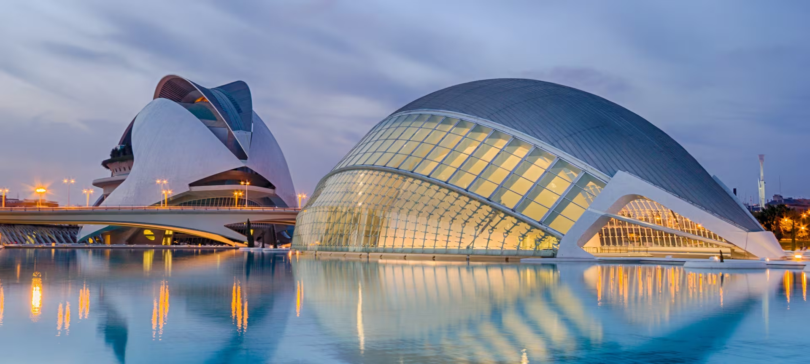
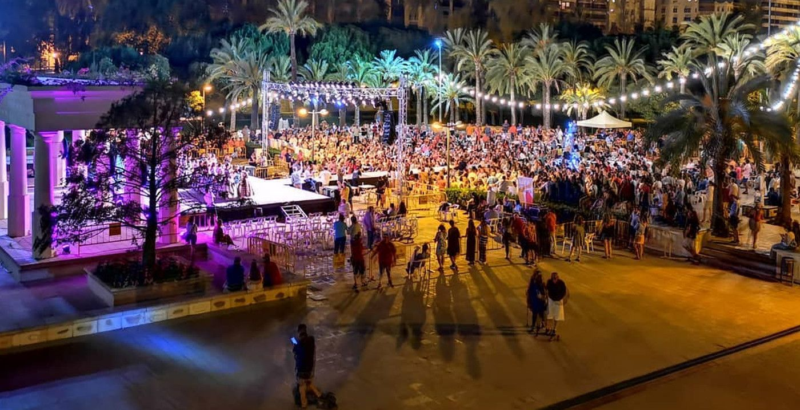

IT IS POINTLESS TO RESIST...



Hi! I'm Bea and...El Cid convoca a sus vasallos; éstos se destierran con él. Adiós del Cid a Vivar. Envió a buscar a todos sus parientes y vasallos, y les dijo cómo el rey le mandaba salir de todas sus tierras y no le daba de plazo más que nueve días y que quería saber quiénes de ellos querían ir con él y quiénes quedarse.
Hi! I'm Bea and...A los que conmigo vengan que Dios les dé muy buen pago; también a los que se quedan contentos quiero dejarlos. Habló entonces Álvar Fáñez, del Cid era primo hermano: "Con vos nos iremos, Cid, por yermos y por poblados; no os hemos de faltar mientras que salud tengamos,
Hi! I'm Bea and...y gastaremos con vos nuestras mulas y caballos y todos nuestros dineros y los vestidos de paño, siempre querremos serviros como leales vasallos." Aprobación dieron todos a lo que ha dicho don Álvaro. Mucho que agradece el Cid aquello que ellos hablaron. El Cid sale de Vivar, a Burgos va encaminado, allí deja sus palacios yermos y desheredados.
Hi! I'm Bea and...Los ojos de Mío Cid mucho llanto van llorando; hacia atrás vuelve la vista y se quedaba mirándolos. Vio como estaban las puertas abiertas y sin candados, vacías quedan las perchas ni con pieles ni con mantos, sin halcones de cazar y sin azores mudados. Y habló, como siempre habla, tan justo tan mesurado: "¡Bendito seas, Dios mío, Padre que estás en lo alto! Contra mí tramaron esto mis enemigos malvados".

Hi! I'm Bea and...Ya aguijan a los caballos, ya les soltaron las riendas. Cuando salen de Vivar ven la corneja a la diestra, pero al ir a entrar en Burgos la llevaban a su izquierda. Movió Mío Cid los hombros y sacudió la cabeza: "¡Ánimo, Állvar Fáñez, ánimo, de nuestra tierra nos echan, pero cargados de honra hemos de volver a ella! "
Hi! I'm Bea and...Ya por la ciudad de Burgos el Cid Ruy Díaz entró. Sesenta pendones lleva detrás el Campeador. Todos salían a verle, niño, mujer y varón, a las ventanas de Burgos mucha gente se asomó. ¡Cuántos ojos que lloraban de grande que era el dolor! Y de los labios de todos sale la misma razón: "¡Qué buen vasallo sería si tuviese buen señor!
Hi! I'm Bea and...Ya por la ciudad de Burgos el Cid Ruy Díaz entró. Sesenta pendones lleva detrás el Campeador. Todos salían a verle, niño, mujer y varón, a las ventanas de Burgos mucha gente se asomó. ¡Cuántos ojos que lloraban de grande que era el dolor! Y de los labios de todos sale la misma razón: "¡Qué buen vasallo sería si tuviese buen señor!
El Cantar de mio Cid es un cantar de gesta anónimo que relat hazañas heroicas inspiradas libremente en los últimos años de la vida del caballero castellano Rodrigo Díaz de Vivar el Campeador. La versión conservada fue compuesta, según la mayoría de la crítica actual, alrededor del año 1200.